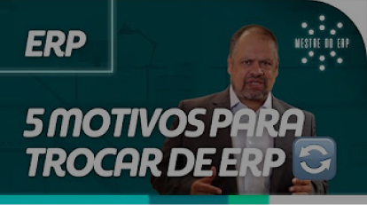

Resultado do teste · Preciso trocar de ERP?
Não se preocupe agora.
Pelo que vimos nas suas respostas, pode ser que ainda tenha espaço para você crescer utilizando o seu ERP atual.
Resultado do teste · Preciso trocar de ERP?
Pelo que vimos nas suas respostas, pode ser que ainda tenha espaço para você crescer utilizando o seu ERP atual.
De qualquer forma, se você respondeu este questionário, pode ser que você tenha algumas dúvidas que não estavam nesse diagnóstico ou que você não esteja satisfeito em alguns pontos específicos do seu sistema.
Você está certo! O ideal é que todas as empresas estejam constantemente em busca de mudanças e avanços em algum processo de negócio, querendo gerar ainda mais resultado e escalabilidade para a empresa.
Caso seja este o caso, podemos fazer um diagnóstico completo que irá medir a maturidade da sua gestão, apresentando onde possam ter gaps nos seus processos e como você está em relação aos seus concorrentes.
Utilizamos o Maha Gestão, uma ferramenta com mais de XXX empresas cadastradas e totalmente gratuita.
Independente do diagnóstico, uma coisa é fato: é importante estar sempre estudando e se atualizando. Te indico o canal do Mestre do ERP para entender ainda mais sobre o mercado de sistemas, tecnologia, gestão, indicadores de sucesso e vários outros assuntos relevantes relacionados aos negócios.

No nosso blog você também encontra muitos materiais com temas que vão de gestão de pessoas até as últimas tendências em tecnologia. Se você gosta de estar sempre atualizado, é só assinar nossa newsletter aqui embaixo para receber novidades:
Ao informar meus dados, eu concordo com a Política de Privacidade.